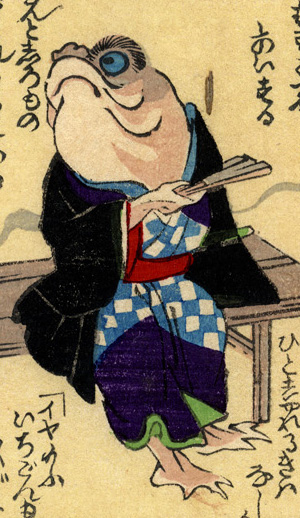

蛙のような化物。襦袢に黒の羽織姿で、長椅子に腰掛けている。扇子を手に持ち上を向いている。足の指には水掻きらしき膜がみえる。
出典：親書誌：U426_nichibunken_0226：化物の嫁入；バケモノノヨメイリ／日付：2010／資源識別子：U426_nichibunken_0226_0014_0000
Copyright (c)2010- International Research Center for Japanese Studies, Kyoto, Japan. All rights reserved.